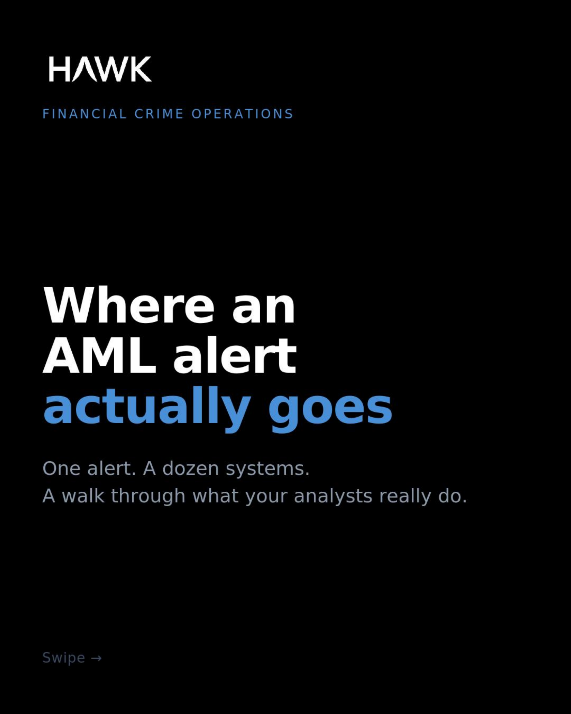
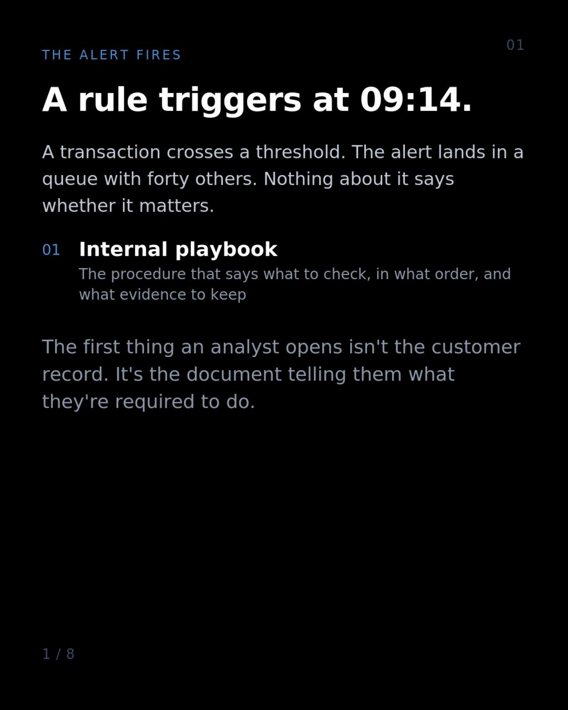
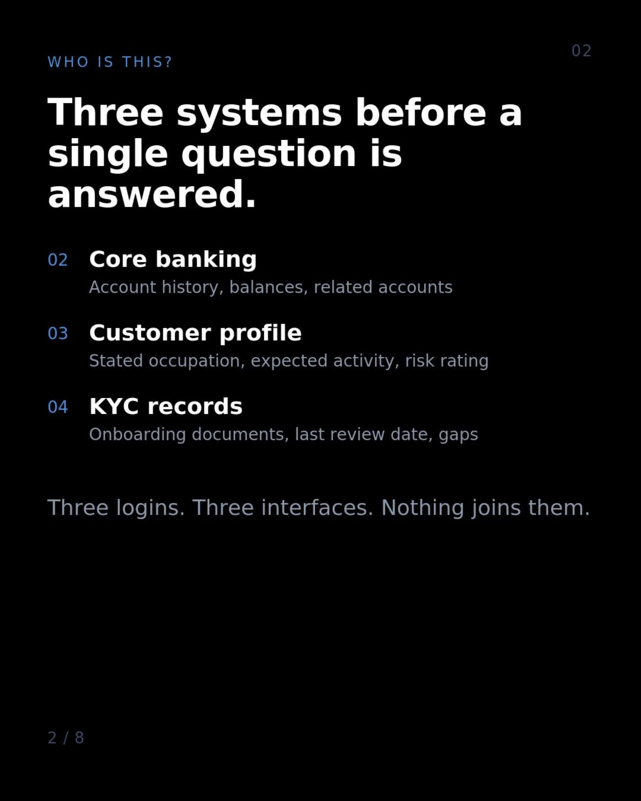
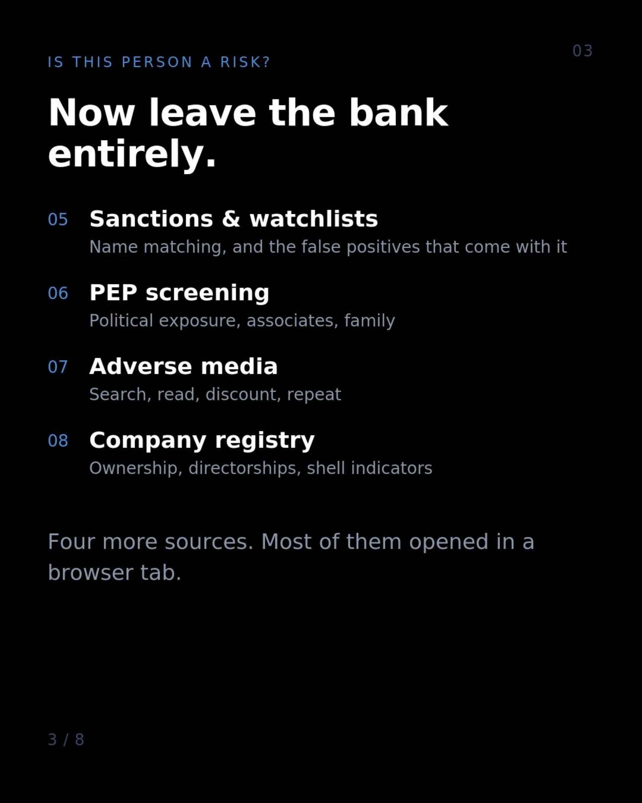
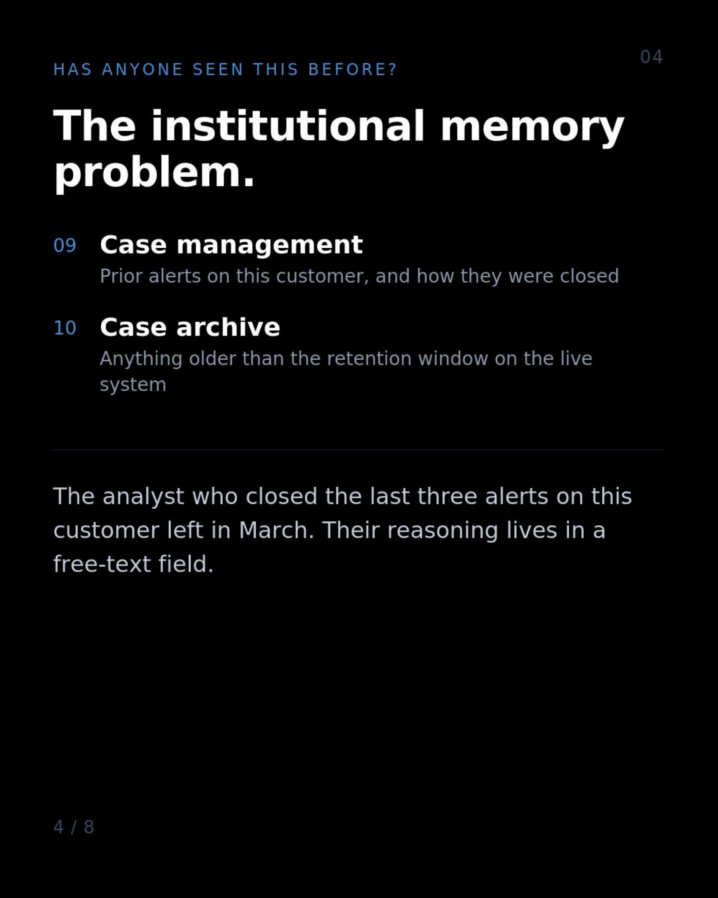
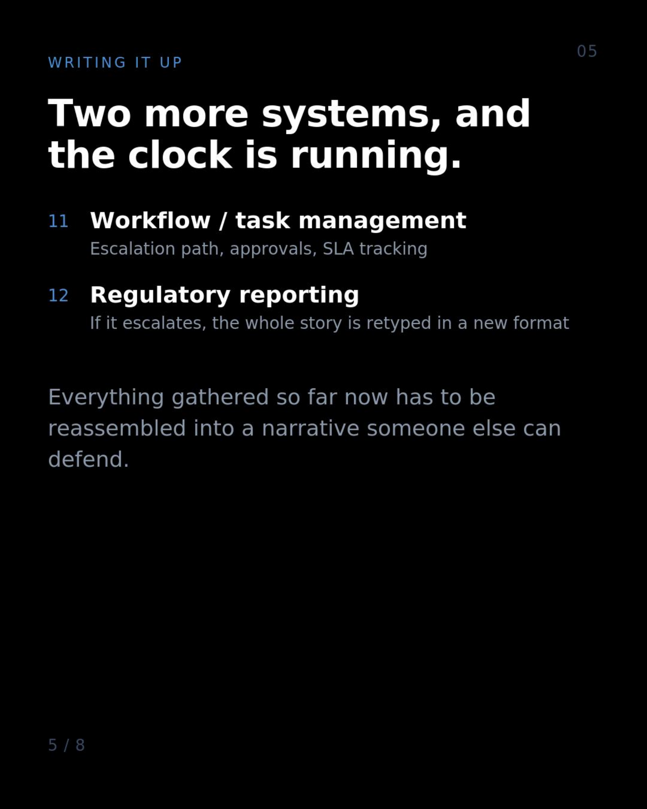
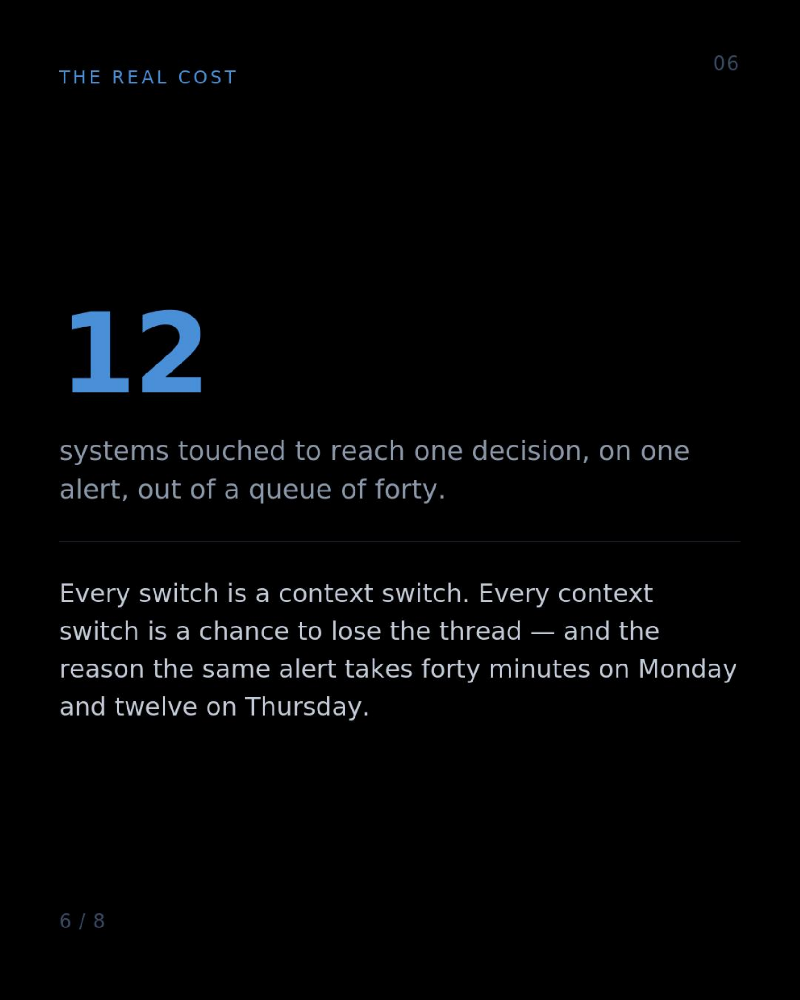
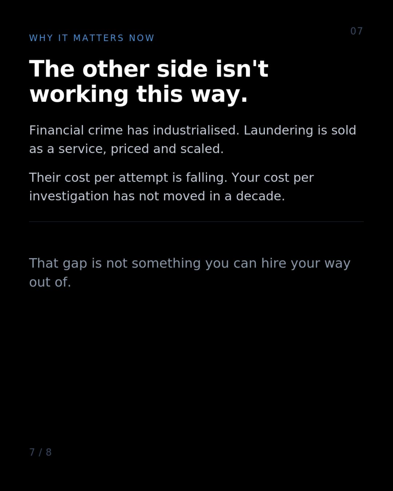
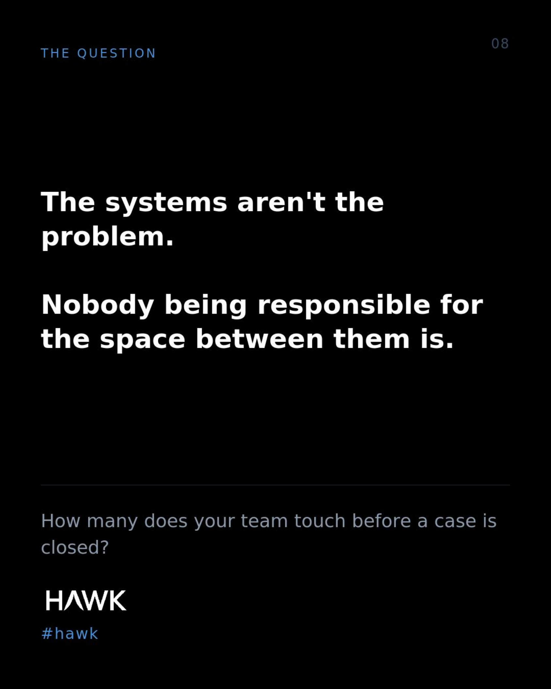

Real-Time Rails, The Weekend Gap, and Why SAR Value Decays by the Hour
Published on September 5, 2026
Real-time payment rails settle 24/7/365. Your monitoring runs 24/7. But your investigators only work Monday to Friday.
A transaction that fires an alert at 6pm on Friday sits in a queue until Monday morning. That's 62 hours in which funds move, layer, and disappear.
Sanctions screening doesn't get to wait. But neither does the false positive sitting next to it. Somewhere a legitimate customer has had a payment blocked on Friday evening, and they will spend their weekend unable to reach anyone who can fix it. You're failing in both directions at once.
For most AML alerts, yes, you're allowed to file on Monday. You're just filing a worse report about money that's already three hops away.
A SAR's value decays by the hour. We treat filing deadlines as the standard when they're just the outer limit. A report filed within the window but three days after the money moved isn't compliance — it's paperwork.
The industry measures itself on SARs filed. It should be measuring on SARs acted upon. Those are very different numbers, and only one of them is a problem for criminals.
Where an AML Alert Actually Goes
One alert. A dozen systems. A path mapped from alert to case closed. Below is the visual slide deck. You can also download the full PDF here.








